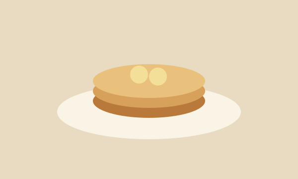
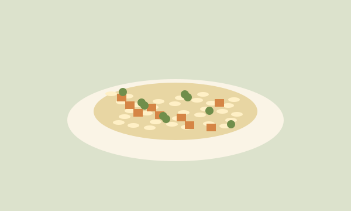
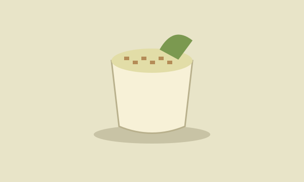

Café da manhã
Uma receita de poucos ingredientes para variar o café da manhã. A banana madura dá sabor à massa e combina com um toque de canela.
Receitas simples, comida de verdade.
COZINHA DO DIA A DIA
Nem toda refeição precisa de uma receita complicada. O Tempero de Casa reúne ideias para quem quer cozinhar com ingredientes comuns e aproveitar melhor o que já tem na cozinha.
Aqui você encontra sugestões para o café da manhã, o almoço e a sobremesa. Clique nas imagens abaixo para ver os ingredientes e o passo a passo de cada receita.

Uma receita de poucos ingredientes para variar o café da manhã. A banana madura dá sabor à massa e combina com um toque de canela.

Um almoço simples para a rotina. A receita usa uma panela só e permite aproveitar os legumes que já estão na geladeira.

Um doce fácil para o fim de semana. Prepare antes do almoço e deixe na geladeira até a hora de servir.